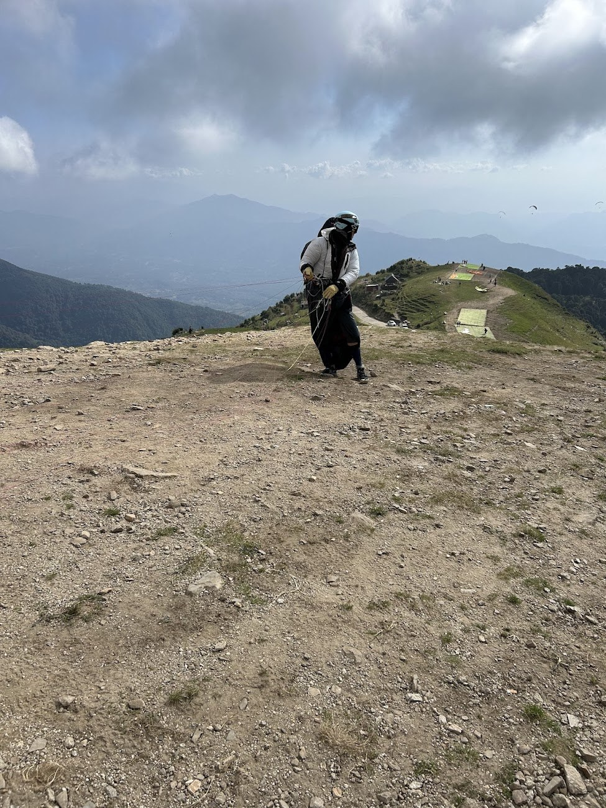
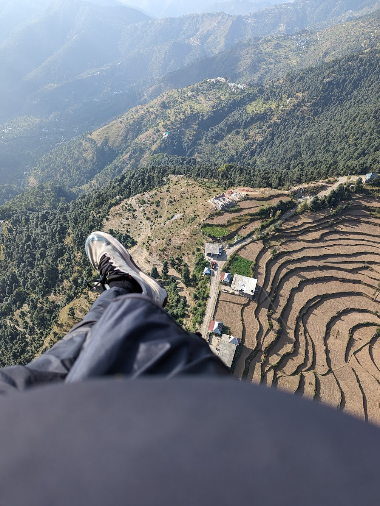

Paragliding i himalaya


Paragliding i himalaya





Første flycamping

- Vær forberedt
- Ha med riktig utstyr
- Buddysystem
- Satelittkommunikasjon
- Større marginer
Flyging uten infrastruktur
- Høydesyke
- Få landingsalternativer
- Topplanding
- Ingen pub på landing
- Nødskjerm/ankelbrudd
- Må sette deg i situasjoner du ikke vil gjort hjemme


Oktober 2024?
Why Bir?
- Sykeste terrenget du noen gang kommer til å fly i
- Sesongen er i oktober/nov - hva annet skal du finne på?
- Eventyr
- Flybilletten er dyr, resten er billig
- Middag: 20-60kr

Why Bir?
- Sykeste terrenget du noen gang kommer til å fly i
- Sesongen er i oktober/nov - hva annet skal du finne på?
- Eventyr
- Flybilletten er dyr, resten er billig
- Middag: 20-60kr

Why Bir?
- Sykeste terrenget du noen gang kommer til å fly i
- Sesongen er i oktober/nov - hva annet skal du finne på?
- Eventyr
- Flybilletten er dyr, resten er billig
- Middag: 20-60kr